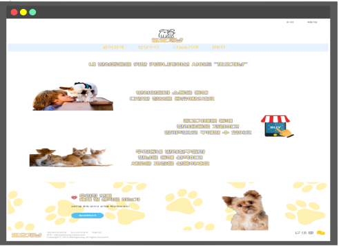

About me
강한 책임감과 인내심이라는 강점으로 목표를 달성하기 위해 항상 노력합니다.
끊임없는 성장과 발전을 통해 개발자로서 변화하는 환경에 유연하게 대처할 수 있도록 하겠습니다.
또한, 활발한 커뮤니케이션으로 팀원들과 협력하여 최선의 방법으로 최고의 결과를 도출해내겠습니다.
Front-end
HTML, CSS, JavaScript
Language
Java, My SQL, Oracle
Back-end
Spring, JSP/JSTL, Ajax
Academic Ability
선문대학교
2013.03 ~ 2017.02
상담산업심리학과 졸업
수원여자고등학교
2010.03 ~ 2013.02
External activities
KH정보교육원 강남지원
2022.11 ~ 2023.06
(스마트웹&콘텐츠개발)반응형 UI/UX 웹콘텐츠 개발자 양성과정 수료
- 웹 프로그래밍에 필요한 Front End 기술에는 html,css,JavaScript(jquery),jstl를 배웠으며
Back End 기술에는 Java,Jsp,Spring Framwork를 배웠습니다.그리고 데이터베이스로 Oracle을 사용하였습니다. - Language:
- Java : 객체지향설계, JSP, Servlet, Spring, Spring Security, Mybatis
- Javascript : JQuery, Ajax
- CSS : Bootstrap - DataBase(DB):
- ERD 설계, My SQL, Oracle - Project tool:
- Eclipst, Visual Studio Code, Spring Framework, Github - Server:
- Tomcat
Skills
배우고 사용했던 기술입니다.
Skills
HTML / CSS / JavaScript
JAVA(Servlet / JSP, jdbc / Spring Framework, Mybatis, Ajax)
ORACLE, My SQL(SQL Programming)
Tools
- Eclipse
- Spring Framework
- Visual Studio Code
etc
- Git
Semi Project
진행한 프로젝트 : 클릭시 깃허브 페이지로 이동

반려동물을 키우는 반려인들의 커뮤니케이션 및 유대감을 도모하는 통합 커뮤니케이션 웹사이트 구축
ZIPDREAM
반려인 커뮤니티 사이트반려동물을 키우는 반려인들의 커뮤니케이션 및 유대감을 도모하는 통합 커뮤니케이션 웹사이트 구축
DOGCAT
2023.03.13 ~ 2023.04.21
반려인 커뮤니테이션 사이트
반려동물을 키우는 반려인들이 증가함에 따라 정보 공유를 위한 사이트의 필요성을 느꼈고, 소통 뿐 만 아니라 중고거래 및 산책메이트 컨텍 등의 다양한 활동을 할 수 있는 사이트를 구축했습니다.- 개발환경 :
- 운영체제 : Window OS
- 개발도구 : Spring Framework, Visual Studio Code
- DBMS : MySQL
- Server : Apache Tomcat 9.0
- Language : Java 11, JavaScript
- 디자인툴 : Bootstrap - 프로젝트 시 활용해본 대표 기술:
- Java / Mybatis / JSP / JQuery / Ajax / JavaScript / CSS / HTML5
- 구현 기능 :
▷ 로그인 - 회원가입
- 로그인 / 로그아웃
- 아이디/비밀번호 찾기
▷ 메인 페이지
- 메인 페이지
▷ 산채메이트 게시판
- 산책메이트 게시글 등록/수정/삭제
- 댓글 등록/삭제
- 산책메이트 신청, 추천하기
▷ 멍냥수다 게시판
- 게시글 등록/수정/삭제
- 댓글 등록/수정/삭제
▷ 중고거래 게시판
- 게시글 등록/수정/삭제
- 댓글 등록/수정/삭제
- 찜하기, 채팅
▷ DBTI
- 강아지 유형 테스트
▷마이페이지
- 내 정보 수정, 프로필 변경
- 게시글 목록 / 댓글 목록 /채팅 목록 / 찜 목록 / 산책메이트 신청 목록 확인
- 담당 역할 :
▷ 메인 페이지
- 또오개냥 웹사이트를 소개하는 웹페이지를 구현
- 각 페이지로 이동할 수 있는 메뉴바 제작
▷ 산책메이트 게시판
- 산책메이트를 구하는 소개글과, 활동사진을 업로드 할 수 있고, kakao Map API를 통해 활동위치를 경도와 위도값을 토대로 지도에 마커를 표시해 게시글을 작성.
- 사용자의 경우 산책메이트 컨텍을 희망하는 게시글에 메이트 가입 신청을 보낼 수 있음
- 게시글에 자유롭게 댓글을 등록 및 삭제할 수 있음
- 추천하고자 하는 게시글의 경우 추천이미지를 클릭하면 localstorage에 로그인한 사용자의 정보를 저장해 추천버튼 활성화
- 산책메이트가 매칭된 게시글의 경우 매칭된 인원수와 빨간하트 사진으로 활성화됨
▷ 마이페이지
- 산책메이트 신청자 목록을 확인 할 수 있음
- 초기에는 "신청대기"상태로 리스트가 보여지고 해당 사용자의 신청 여부를 수락 또는 거절을 통해 변경시킬 수 있음
▷ 사용 API
- 카카오 맵 API
- 회고 :
- 게시판 기능 구현을 함으로써 JSP/CRUD의 기본적인 흐름을 파악하는데 큰 도움이 되었으며, DB설계의 중요성을 느낄 수 있었습니다.
- 가장 기본적인 KAKAPO MAP API를 사용해 위치를 마커로 클릭하고, 해당 마커의 위치를 유지시키는 기능을 수행하면서 API의 원리를 익힐 수 있었습니다.
Final Project
진행한 프로젝트 : 클릭시 깃허브 페이지로 이동

ZIPDREAM
임차인과 임대인, 공인중개사 부동산 거래 주체들을 유기적으로 잇는 통합 주거 웹사이트 구축
집드림
2023.05.15 ~ 2023.06.20
부동산거래 사이트
임차인과 임대인, 공인중개사 부동산 거래 주체들을 유기적으로 잇는 통합 주거 웹사이트 구축 하기 위한 웹페이지 구현하였습니다.- 개발환경 :
- 운영체제 : Window OS
- 개발도구 : Spring Framework, Visual Studio Code
- DBMS : MySQL
- Server : Apache Tomcat 9.0
- Language : Java 11, JavaScript
- 디자인툴 : Bootstrap - 프로젝트 시 활용해본 대표 기술:
- Java, Spring Framework / Mybatis / JSP / JQuery / Ajax / JavaScript / CSS / HTML5 - 구현 기능 :
▷ 로그인
- 일반고객 / 공인중개사 회원가입
- 카카오 소셜 로그인, 로그인 및 로그아웃
- 아이디 / 비밀번호 찾기, 회원탈퇴
▷ 메인 페이지
- 지도 매물검색 , 공지사항, 부동산 뉴스, 채팅, 반응형 뷰
▷ 지도 페이지
- 전체 매물 조회 및 마커 클릭 이벤트
- 법정동 검색 후 조회 및 상담 가능 매물 조회
- 상세페이지로 정보 전달하며 이동
▷ 분양 페이지
- 청약 정보 조회, 분양가이드
- 분양 일정 조회
▷ 알림 페이지
- 운영 알림 및 관심 분양 알림
▷ 매물 페이지
- 매물 상세페이지 이동
- 매물 상담 신청 / 찜하기 / 허위매물 신고
- 매물 내 게시글 작성/신고/삭제
- 게시글에 댓글 등록/신고/삭제
▷ 관리자 페이지
- 회원 조회 / 회원 관리 및 공인중개사 승인
- 공지사항 / 이벤트 / 신고 / 채팅 / 매물 관리
▷ 일반회원 마이페이지
- 최근 본 방 목록(5개 씩) 및 찜 한 목록 조회
- 내 매물 등록 및 내 매물 조회/삭제 찜한 목록
- 내 정보 수정하기, 쿠폰 목록
▷ 공인중개사 마이페이지
- 매물등록 및 삭제 /매물 등록 리스트
- 매물신청 리스트
- 상담신청 리스트 및 수락여부
- 내 정보 수정하기
- 담당 역할 :
▷ 매물페이지(회원)
- 단지코드를 ajax로 기본정보 api로 보내 해당 매물 주변에 있는 교통정보/학교정보/편의시설/병원정보 불러오기
- 공인중개사가 등록한 매물정보 페이지로 이동해 이미지 및 상세정보 확인
- 회원이 매물을 등록한 공인중개사에게 희망내용을 작성해 대면/비대면으로 상담 신청
- 관심있는 매물 찜하여 마이페이지에서 확인 가능
- 허위매물로 의심이 가능 매물의 경우, 해당 매물을 신고해 관리자에게 내용을 전달
- 매물 내 자유롭게 게시글을 작성하고 삭제 가능
- 게시물에 자유롭게 댓글을 작성하고 삭제 가능
- 불쾌감을 주는 타 사용자의 게시물의 경우 신고를 통해 관리자에게 내용 전달
▷ 공인중개사 마이페이지
- 공인중개사가 직접 매물의 이미지, 상세정보를 통해 매물을 등록하고 사용자들에게 소개할 수 있음
- 공인중개사가 등록한 매물의 목록을 확인할 수 있음
- 사용자가 매물에 상담을 신청한 경우 "대기" 상태로 리스트에 등록이 되고, 공인중개사는 사용자가 남긴 메세지를 확인한 후 "수락" 혹은 "거절"을 통해 상태를 변경시킬 수 있음
▷ 사용 API
- 공공데이터 포털 : 국토교통부_공동주택 기본 정보제공 서비스
- 회고 :
- "기능 완성"이라는 구체적인 목표와 효율적인 일정관리를 통해 주어진 기간내에 체계적으로 프로젝트를 진행할 수 있었고, 개개인에게 주어진 목표를 부족함 없이 달성함으로써 성공적으로 목표를 달성할 수 있었습니다.
- 기술적인 부분에서 게시판 구현하기를 통해 MVC project를 깊이 있게 이해할 수 있었고, 공공데이터 API를 토대로 Ajax를 이용한 비동기 처리에 대한 이해도를 높일 수 있었습니다.
Let's talk
010-9084-1565
gmalddlqslek@naver.com
2023 yejin0220 - All rights reserved